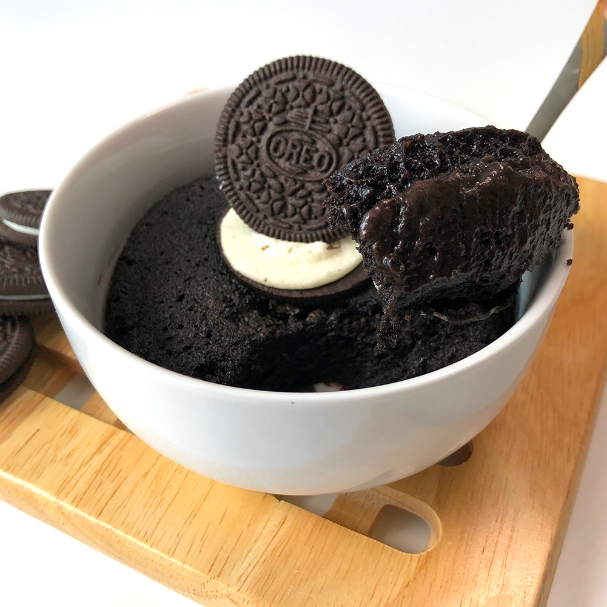

Oreo Mug Cake

Description
This Oreo mug cake is literally Oreos in cake form.
Ingredients
- Cooking spray
- 4 cream-filled chocolate sandwich cookies (such as Oreo®), crushed into fine crumbs
- 3 tablespoons whole milk
- 1/4 teaspoon baking powder
Steps
- Spray a small mug with non-stick cooking spray.
- Mix Oreo cookie crumbs, whole milk, and baking powder in a small bowl until well combined.
- our into the prepared mug and microwave for 1 1/2 minutes. Let cool.
Nutrition facts
675 34g
Calories Fat
89g 8g
Carbs Protein